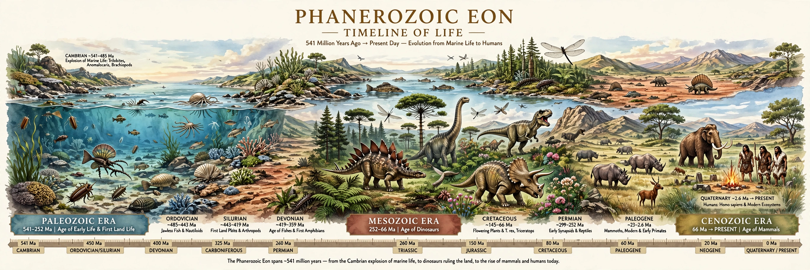

The Phanerozoic is the current and most recent of the four geologic eons in Earth's history, spanning from 538.8 million years ago to the present. Its name means "visible life," reflecting the abundance of organisms with hard shells, bones, and other parts that fossilize readily. During the Phanerozoic, multicellular life diversified enormously, animals and plants colonized the land, and complex ecosystems evolved.

| Began | 538.8 million years ago |
|---|---|
| Status | Ongoing (current eon) |
| Eras | Paleozoic, Mesozoic, Cenozoic |
| Preceded by | Proterozoic Eon |
The Phanerozoic is divided into three eras. The Paleozoic ("old life," 538.8–251.9 Ma) opened with the Cambrian explosion of animal diversity and saw the evolution of fish, land plants, insects, amphibians, and reptiles, ending with the largest mass extinction in Earth history. The Mesozoic ("middle life," 251.9–66 Ma) was the age of reptiles, dominated by dinosaurs and marked by the rise of mammals, birds, and flowering plants, ending with the asteroid-driven Cretaceous–Paleogene extinction. The Cenozoic ("new life," 66 Ma–present) is the age of mammals and birds, encompassing the Quaternary ice ages and the evolution of humans.
Phanerozoic biodiversity, as charted by Jack Sepkoski and others, shows long-term growth punctuated by the "Big Five" mass extinctions. The eon's climate alternated between greenhouse states with no polar ice and icehouse states with extensive glaciation, driven by plate tectonics, volcanism, and carbon-cycle feedbacks. Fossil CO2 proxies and oxygen-isotope records allow detailed reconstruction of these swings.
The base of the Phanerozoic (and of the Cambrian Period) is defined by the first appearance of the trace fossil Treptichnus pedum at a global stratotype section in Newfoundland. The eon continues formally into the present day.
See also: Geologic time scale · Cambrian explosion · Paleozoic · Mesozoic · Cenozoic